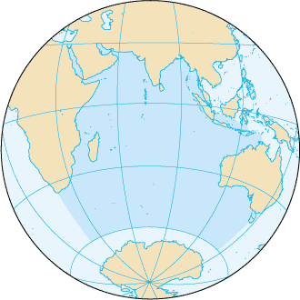

Индийский океан
Инди́йский океа́н — третий по площади и глубине океан Земли, составляющий около 20 % её водной поверхности.
Его площадь — 76,174 миллионов км², объём — 282,65 млн км³. Самая глубокая точка океана находится в Зондском жёлобе (7729 метров).
На севере омывает Азию, на западе — Африку, на востоке — Австралию; на юге граничит с Антарктидой. Граница с Атлантическим океаном
проходит по 20° меридиану восточной долготы; с Тихим — по 146°55′ меридиану восточной долготы. Самая северная точка Индийского океана
находится примерно на 30° северной широты в Персидском заливе. Ширина Индийского океана составляет приблизительно 10 000 км между южными точками Австралии и Африки.
Его расположение на Земле:

Сравнение различных океанов нашей планеты:
| Океаны
|
Площадь
поверхности
воды, млн км²
|
Объём,
млн км³
|
Средняя
глубина,
м
|
Наибольшая
глубина океана,
м
|
| Атлантический
|
91,66
|
329,66
|
3597
|
жёлоб Пуэрто-Рико (8742)
|
| Индийский
|
76,17
|
282,65
|
3711
|
Зондский жёлоб (7729)
|
| Северный Ледовитый
|
14,75
|
18,07
|
1225
|
Гренландское море (5527)
|
| Тихий
|
179,7
|
710,36
|
3984
|
Марианская впадина (11 022)
|